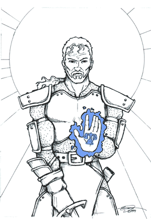

RUOLO E COMPITI DEI PALADINI DI TANATOS
Nota
di gioco: I paladini di Tanatos sono della classe warrior - paladin (Player's
Handbook) ed utilizzano quel sistema di punti esperienza. Le regole di quella
classe sono utilizzate come base generale laddove non differiscono con quanto
riportato in questa pagina e in quella dei poteri e dei limiti.
I
paladini di Tanatos sono guerrieri sacri del proprio dio sulla terra di Arelia.
I paladini di Tanatos sono molto esigui di numero. Per divenire paladino un
ragazzo da 12 a un massimo di 14 anni deve affrontare almeno cinque anni di
intenso impegno studiando la teologia, la storia delle religioni, l’antico
Argan, la psicologia, varie scienze umanistiche, ma anche addestrandosi
all’uso delle armi, al combattimento, agli sforzi fisici e alle cure del
fisico ferito, temprando quindi il proprio spirito e la propria mente. Deve
avere fra i maestri e gli istruttori almeno un chierico e un guerriero (anche
paladino) di minimo quarto livello che si dedichino a lui 7 giorni a decade.
Dopo questi cinque anni di impegni adeguati, il seminarista che ha i requisiti
idonei a divenire paladino ha il 15 % di divenirlo e può riprovare ogni anno
fino a che compie 25 anni. Quando quindi è entrato nelle grazie di Tanatos,
deve avvenire una solenne cerimonia con la quale con alcuni riti particolari, il
Vescovo o l’ Arcivescovo, o un Abate, o un Grande Difensore della Fede possono
nominarlo paladino (in realtà il rito può essere compiuto da qualsiasi priest
di Tanatos del livello VII o maggiore o da un paladino del IX o maggiore ma
l’autorità non gli è concessa dalla burocrazia dell’arcivescovato).
Nominato paladino, egli ha l’obbligo di rispettare un Sacro Codice di Comportamento che differisce in più punti da un normale codice di cavalleria ma è composta da svariate regole e obblighi.

Sacro
Codice di Comportamento
Il
paladino non può mai congiungersi carnalmente o amare alcun essere umano poiché
egli deve amare in ugual modo tutti gli uomini e in misura maggiore e piena il
proprio Dio .
Il
paladino non può cumulare ricchezze maggiori di quelle che gli consentano una
vita normale e degna di rispetto ( la cifra di spese mensili di massimo 150
corone) ha comunque diritto a ricevere le sue armi e armature dalla Chiesa di
Tanatos come spettanti a seconda del suo rango, ha diritto al vitto e
all’alloggio presso le istituzioni della Chiesa di Tanatos. Ha la possibilità
di accumulare denaro presso la Cassa dei
paladini che è gestita dalla Chiesa di Tanatos, questa cifra potrà essere
utilizzata solo quando il paladino diverrà
Grande Difensore della Fede e vorrà costruirsi una roccaforte per la
quale avrà il contributo del 35 % della costruzione da parte
dell’Arcivescovato o da parte di colui che lo ha nominato, la modalità con la
quale questa somma verrà versata dipende dalle disponibilità in quel momento.
Può sottrarre una somma solo per investirla e poi depositare di nuovo gli
interessi e il capitale. Il paladino ha però l’obbligo di donare fino a che
diviene Grande Difensore della Fede il 25 % di tutto ciò guadagna a colui che
lo ha nominato o a colui a chi è stato votato (se quindi è diverso da chi lo
ha nominato, sarà poi questo a dover versare al paladino il 35 % per la
costruzione, di solito questa scelta avviene appena dopo la nomina del paladino
e non si cambia durante poi il suo progredire mai più, raro infatti che per
esempio l’Arcivescovo accettasse un paladino del IV grado che è molto libero
e ha gia versato all’abate che lo ha nominato ingenti somme assumendosi per di
più l’incarico di pagare a breve il 35 % di una rocca , possono comunque
farsi dei patti di scambio, per organizzare il passaggio), colui che ha
il paladino è detto il suo punto
di riferimento ecclesiastico. Un paladino però non può mai
deliberatamente rinunziare alla sua quota di guadagno sapendo di non poterla
utilizzare , può invece riceverla e invece di depositarla o utilizzarla,
donarla ai bisognosi.
Un
paladino non può effettuare confessioni e rimuovere i peccati, però può
essere sempre confessato da qualsiasi chierico pure da un giovane adepto.
Il
paladino in nessun caso può farsi pagare le cure o ricevere qualche cosa in
cambio, e peccato per un paladino avvantaggiare un soggetto nelle cure solo per
la sua importanza o amicizia .
Il
paladino deve essere umile e non avrà mai innanzi al suo nome un titolo di
reverenza, verrà chiamato sempre con il proprio nome e non se ne offenderà
riceverà il tu ma dovrà rispettare l’etichetta e le cariche altrui, il
rispetto per una persona non dipende da come la gente è costretta a rivolgersi
verso di questa ma da quello che la gente pensa dell’ uomo al dilà della sua
carica o titolo.
Il
paladino deve rispettare la vita dei tanatiani e degli esseri viventi , deve
usare le armi solo per minaccia e deve evitare di dare la morte ma preferire
solo sconfiggere i propri avversari , questa regola non vale per i malvagi
esseri inumani il cui unico scopo è quello di portare male e morte , se
comunque il paladino evita la soluzione finale anche per questi il suo spirito
viene lodato ( con i px e la grazia di Tanatos ) .
I
paladini devono servire la loro Santa Chiesa , proprio per questo motivo vengono
nominati . La vita di un paladino si divide in due parti . Da un lato il
paladino deve servire la chiesa, dall'altro il paladino è libero di operare per
il bene secondo i propri dettami personali..
1) A SERVIZIO PER LA SANTA
CHIESA DI TANATOS
Ogni
paladino deve prestare il proprio servigio presso la chiesa , il paladino ha
l’obbligo di mettere a disposizione ogni anno un periodo di tempo che varia al
variare del proprio grado , il periodo viene scelto di comune accordo tra il
paladino e il suo punto di riferimento ecclesiastico o il capo culto locale a
cui è stato affidato :
Paladino
di I grado = 8 mesi all’anno
Paladino
di II grado = 6 mesi all’anno
Paladino
di III grado = 4 mesi all’anno
Paladino
di IV grado = 3 mesi all’anno
Grande
difensore della Chiesa = Non più
In questo periodo il paladino deve difendere la
chiesa e prestare la propria opera per aiutare il clero secondo le disposizioni
che riceve da colui che è il suo punto
di riferimento ecclesiastico (di solito chi lo ha nominato) . Il suo punto di riferimento ecclesiastico può
però non utilizzare il paladino direttamente ma porlo al servizio di un altro
chierico o persona , in questo caso l’unico incarico che questi possono
affidare al paladino può essere difendere i beni , i luoghi
o le persone e curare i soggetti che ne hanno bisogno , se invece si
tratta di un capo culto locale , può essere messo direttamente a suo
servizio . Il punto di riferimento ecclesiastico può invece anche affidare al
paladino dei compiti extra e delle missioni sempre che siano compatibili con il
credo religioso e non mettano in discussione lo status del paladino ( che in
tali casi può rifiutarli ) , il paladino farà di tutto per svolgere nel
miglior modo possibile il compito affidatogli sempre nei limiti temporali
richiesti . I limiti temporali non sono rigidi ben può svolgere un paladino I
grado un compito che richieda 10 mesi e poi l’ anno successivo prendersi 4
mesi liberi o viceversa , però il tempo residuo si dovrà sempre recuperare e
non si possono ottenere altre eccezioni senza prima aver ristabilito l’
equilibrio temporale . In questo periodo comunque il paladino deve seguire le
indicazioni e gli eventuali contro ordini del suo punto di riferimento
ecclesiastico e qualora questo venga a mancare del suo immediato sottoposto :
Arcivescovo - Ispettore dell‘arcivescovato - Vice ispettore - i priori per
anzianità \ Abate - Arcivescovo \ Grande difensore della fede - a scelta del
paladino un Vescovato o Arcivescovato . Questo capita però solo nei casi in cui
il punto di riferimento ecclesiastico non abbia in qualche modo riferito al
paladino le direttive di cui seguire nei casi di sua assenza giustificata .
2)
OPERARE PER IL BENE COMUNE
Il resto del tempo può essere utilizzato dal
paladino a piacimento ( ciò non toglie che un paladino può ritenere essenziale
continuare a servire la chiesa o a difendere qualcosa che altrimenti rimarrebbe
incustodita ) mai deve però il paladino finire improvvisamente il proprio turno
per la chiesa pregiudicando così l’ esito della missione o mettendo in
pericolo un bene senza essersi prima assicurato che succeda quando lui se ne
andrà e senza aver disposto le cose per quando non ci sarà . Se per colpa di
colui a cui è affidato il paladino si vede costretto a rinunziare al suo tempo
libero può appena abbia sistemato le cose recuperare il tempo perduto senza
chiedere il permesso . Se però questa situazione in cui la presenza del
paladino è necessaria a prescindere dalla volontà di qualcuno ma è richiesta
dalle circostanze , il paladino ha il dovere di rimanere e potrà recuperare il
tempo in seguito accordandosi con il suo punto di riferimento ecclesiastico .
Nel suo tempo libero il paladino è libero di recarsi
dove vuole seguendo però questi precetti anche se in modo non categorico :
* ) Il paladino non deve spostarsi per divertimento e
fare viaggi di piacere .
* ) Il paladino deve avere sempre come scopo nei suoi
spostamenti raggiungere una zona in cui è necessario il suo intervento o la sua
presenza per operare a fin di bene .
* ) Il paladino può avventurarsi per fare esperienza
e per trovare oggetti utili , ma dovrebbe in ogni caso combinare questo punto
con il precedente .
* ) Il paladino in ogni caso non deve porre a
repentaglio la sua vita o rischiare più del dovuto perchè la vita non gli
appartiene , ma è di Tanatos e il Dio la ha donato a tutta la comunità . Può
decidere di sacrificarsi o di rischiare in casi eccezionali e straordinari . Per
questo motivo un paladino non dovrebbe mai accettare un duello , ma può
difendersi se molestato .
*
) Il paladino deve evitare di risiedere per troppo tempo nello stesso luogo o
recarsi a fare del bene nel medesimo posto , perché altrove potrebbero avere
bisogno di lui e perchè deve amare tutti gli esseri umani allo stesso modo .
* ) Il paladino deve recarsi a portare il suo aiuto dove è richiesto , seguendo questi criteri : è più importante recarsi ove può compiersi maggior male , e in un secondo momento deve preferire aiutare i più puri , fedeli e indifesi . Non devono influenzarlo regalie o idee di fama , conquista , od oggetti . Il paladino può rifiutare di recarsi in aiuto di chi ne abbia bisogno se ciò comprometterebbe un suo incarico o un suo intento di maggiore rilevanza.
I
PALADINI E LA TEOLOGIA
I
paladini di Tanatos hanno un particolare dono, hanno la facoltà di predicare
dovunque per Tanatos, per infondere in lui la sua fede, per creare nuove comunità
di tanatiani, per portare avanti la sua dottrina, nel fare questo i
paladini devono seguire gli insegnamenti della santa chiesa che vengono fatti
dal pontefice e cambiano di tanto in tanto, l’unica interpretazione autentica
può essere quella del pontefice o del vescovo e dell’arcivescovo del luogo.
Può anche capitare che la dottrina di un vescovato sia leggermente differente
da quella di un altro , se sorgono gravi discrasie le risolve il pontefice.
Quando passano i mesi a servizio della chiesa
paladini devono trascorrere almeno 10 giorni per fare ritiro spirituale e
aggiornarsi sulla dottrina I paladini hanno l’obbligo morale di tentare di
convertire gli atei al tanatanesimo e di contrastare coloro che predicano per il
male o per una fede diversa . I paladini sono in grado inoltre di donare la
qualità di fedele tanatiano a coloro che ritengano ne siano degni e abbiano le
adeguate conoscenze della religione medesima, per fare ciò fino al II grado
devono portare il prossimo fedele presso un capo culto locale e farlo divenire
tale con il consenso di costui . Dal III grado in poi i paladini possono con la
loro spada investire della qualità di fedeli senza alcun permesso e poi possono
passare ad iscrivere come fedele il soggetto presso una comunità religiosa. I
paladini devono fare attenzione ad essere molto sicuri di coloro che fanno
divenire fedele, infatti di un fedele regolare tutte le persone altrettanto
tanatiane possono e devono fidarsi , un fedele può partecipare alle cerimonie e
alle messe. Qualora un paladino faccia divenire, anche per errore, fedele una
persona che odia il tanatanesimo o è ad esso contraria, perde lo status fin che
non rimette il tutto.
Il paladino dal III grado in poi , in accordo con le regole dell’arcivescovato o del vescovato in cui si trova , può togliere il titolo di fedele tanatiano alle persone malvagie e a tutti coloro ritenga degno , un paladino può dare il suo perdono a costui , e farlo divenire di nuovo fedele senza bisogno di vincoli . Ogni volta che fa ciò il paladino deve fare redazione scritta con il suo bollo tanatiano personale ed avvisare il capo culto locale che ha poi l’obbligo di avvisare il vescovo o l’arcivescovo competente .
IL
FINE
Ogni
paladino ha un grande fine da perseguire per tutta la durata della sua
esistenza questo è un fine complesso in quanto composto da notevoli
sfaccettature tutte culminanti nel bene ultimo.
“Portare
alta la gloria di Tanatos e del suo culto rispettando la religione e combattendo
le eresie. Adorare la vita in tutte le sue forme portare la morte solo come
ultima soluzione, difendere gli innocenti, i deboli, gli oppressi, le donne.
Rispettare coloro che agiscono per il bene e coloro che seguono l’onore.
Portare la gioia la felicità e il conforto di Tanatos la dove questo non
esiste. Combattere la miseria il degrado e
il mal costume, incitare al rispetto di leggi giuste e sagge. Diffondere in ogni
angolo di mondo il bene e la fede tanatiana .”
IL
CODICE MORALE
Nel
perseguire i suoi fini un paladino ha un codice morale che deve rispettare , per
un paladino ogni volta che cade in una situazione di facile tentazione è una
vittoria ricordarsi della norma morale ed essere consapevole di agire
diversamente dal comportamento istintivo.
1)
Restare tranquillo e mantenere sempre la calma senza raccogliere provocazioni e
senza rispondere in maniera offensiva alle offese subite ( il pal. può
allontanarsi , o mettersi a pregare ) . Non sono ricomprese le offese mosse a
tutto il culto o al Dio , in tale caso può operare ma non di impulso e in modo
sconcio ma porre fine all’ offesa .
2)
Non essere mai superbo con nessuno , specie con coloro che non sono potenti e
che già sono castigati dalla vita , anche nei casi in cui essi sbagliano fargli
comprendere l’ errore ma non usare toni di disprezzo , toni altezzosi o
minacce.
3)
Qualora però un essere è stato avvisato e ripreso nel suo comportamento
scorretto , o si tratta di persona malvagia che faccia queste azioni cattive
abitualmente , il paladino può intervenire per punire o imperdire che venga
commesso un atto malvagio.
4)
Non accettare raccomandazioni perchè Tanatos non ne accetta e tratta tutti gli
esseri in egual modo , combattere la corruzione e il degrado sociale.
5)
Non essere mai avaro ma donare a coloro che non hanno , anche a costo di
sacrifici reali del paladino . Il denaro è solo un mezzo umano per vivere non
è fonte di gioia ne di serenità interiore ma è un falso valore che l’
ingegno umano ha creato per se.
6)
Amare la bellezza e la prosperità come simbolo della vita e del dono di Tanatos
agli uomini , rispettare le donne e gli anziani con i loro pensieri e i loro
bisogni .
7)
Essere capace di perdonare anche i più negativi degli esseri , per i peggiori
dei crimini , qualora le loro intenzioni siano cambiate e vogliano redimersi .
Non spetta al paladino punire i colpevoli per quello che essi hanno fatto in
precedenza ma è suo compito impedire che lo facciano ancora .
8)
Non dubitare mai della potenza e della grazia di Tanatos e recarsi in chiesa
spesso per meditare e per avere la grazia divina.
RATIO TEOLOGICA DEI PALADINI
Tanatos
ha voluto intervenire sulla terra in modo più diretto che con i suoi chierici
ma in modo meno mentale e più pratico attraverso valorosi guerrieri che
posseggono un grande spirito e notevoli abilità , Tanatos dona loro un potere
molto grande ma loro devono stare sempre in armonia con il loro Dio e anche solo
un piccolo squilibrio causa loro la perdita del contatto con il Dio per cui
devono confessarsi e pagare una forte penitenza per rientrare nelle grazie di
Tanatos . E’ cosa grave essere recidivi .